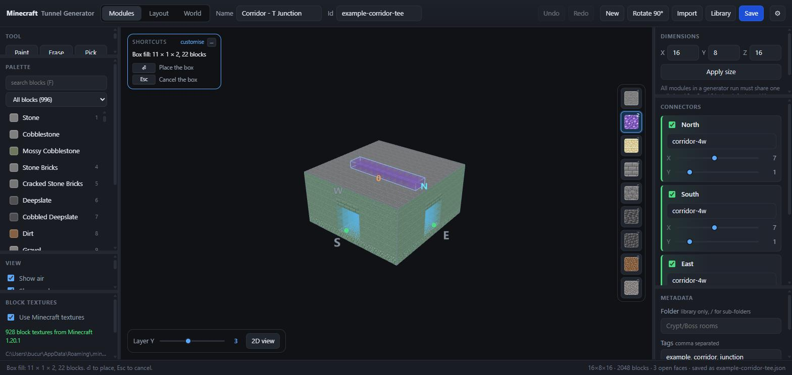
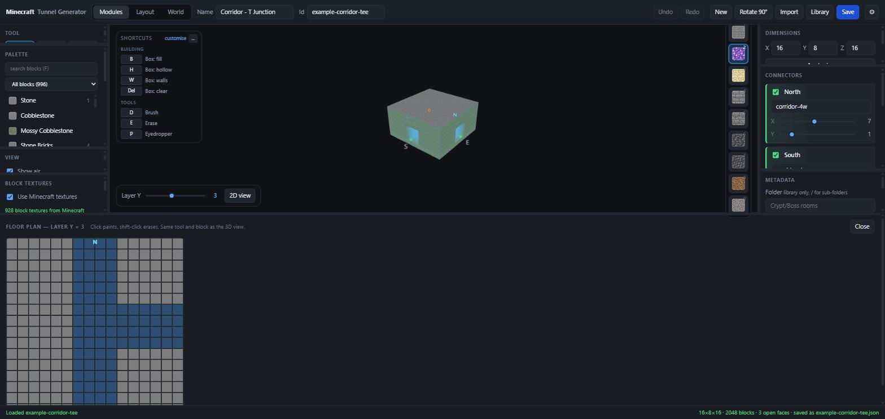
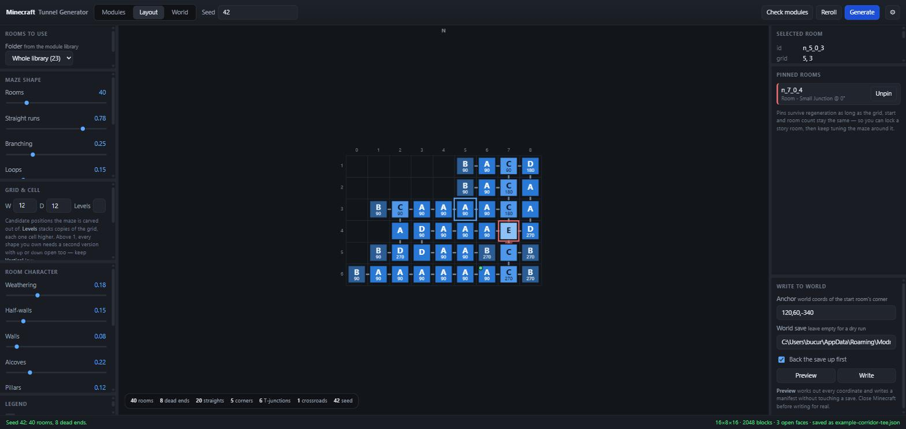

Key features
01 3D module editor
Design small reusable rooms and corridors in a Three.js viewport, then tag which of their six faces can connect to other modules. Box tools preview a fill as translucent blocks with a live count before anything is committed.

02 2D floor-plan view
A top-down plan of the current layer, much faster than the 3D view for laying out walls, with the layer below ghosted through so shafts and openings line up.

03 Seeded maze generation
A Growing Tree algorithm carves the layout, with one parameter spanning randomized DFS and Prim's. Same seed, same modules, same pins gives byte-identical output — so you can change one knob and diff the result.

04 Rotation-aware module fitting
Carving fixes exactly which faces each room must open on. A backtracking solver then places a module only if some rotation of it opens on those faces and its connector labels match its neighbours'. When no module fits, the error names the room, the shape needed, every shape the library offers, and which setting to change.
05 Procedural variation
Five module shapes cover a flat maze, so weathering scatters different blocks per 3×3×3 patch to stop forty rooms reading as copy-paste, and furniture adds half-walls, alcoves and pillars. It never touches air — that's what the doorways are made of — and every room is flood-filled from each doorway afterwards, so a partition can't silently seal it.
06 Live world editing
A third tab opens one of your actual Minecraft worlds, takes a working copy so the original is never written to, and lets you edit the real terrain in the same 3D view — place blocks, select a box, move it, save back.
07 Writes into the save
The output isn't a schematic — the generator writes region data directly via amulet-core, backing the save up first and touching only the cells that changed. A dry run produces the full coordinate manifest without opening anything.
In short
I built this because hand-placing a backrooms-style tunnel system under a Minecraft village for a video series meant thousands of blocks that would be thrown away the moment I changed the layout. It's two programs — a Vite/TypeScript/Three.js editor and a Python CLI — that can't drift apart because they share one JSON Schema and the GUI drives the CLI rather than reimplementing it. The interesting engineering was less the maze than the fit: turning "this room needs north, south and up open" into a rotated module with matching connectors, and making the failure legible when no module fits.